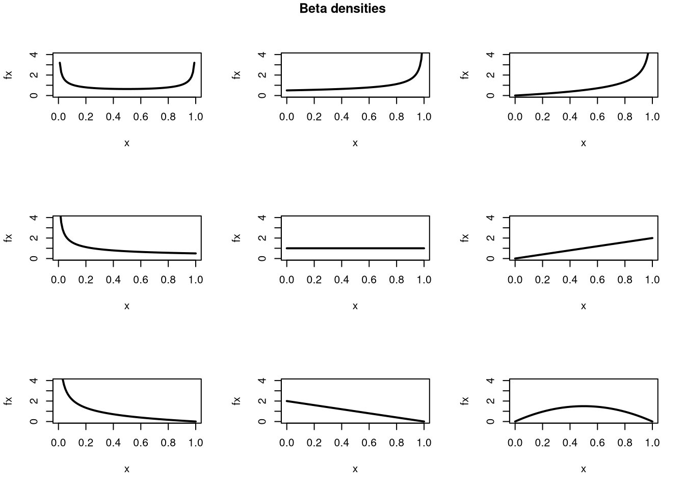

4 Random Variables
In the last section we computed a distribution given the data, whereas now we generate data given the distribution.
Random variables are vectors that are generated from a known Cumulative Distribution Function. They are a sample from a potentially infinite population with
- A sample space which refers to the set of all possible outcomes.
- A probability for each particular set of outcomes, which is the proportion that those outcomes occur in the long run.
There are many probability distributions, and the most common ones are easily accessible. But there are only two basic types of sample spaces: discrete (encompassing cardinal-discrete, factor-ordered, and factor-unordered data) and continuous, which lead to two types of random variables.
4.1 Discrete
The random variable can take one of several values in a set. E.g., any number in \(\{1,2,3,...\}\) or any letter in \(\{A,B,C,...\}\).
Bernoulli.
Coin Flip: Heads=1 or Tails=0, with Prob. Heads = 1/2
Code
rbinom(1, 1, 0.5) # 1 Flip
## [1] 1
rbinom(4, 1, 0.5) # 4 Flips
## [1] 1 1 0 0
x0 <- rbinom(600, 1, 0.5)
# Setup Plot
layout(matrix(c(1, 2), nrow = 1), widths = c(4, 1))
# Plot Cumulative Averages
x0_t <- seq_len(length(x0))
x0_mt <- cumsum(x0)/x0_t
par(mar=c(4,4,1,4))
plot(x0_t, x0_mt, type='l',
ylab='Cumulative Average',
xlab='Flip #',
ylim=c(0,1),
lwd=2)
points(x0_t, x0, col=grey(0,.5),
pch=16, cex=.2)
# Plot Long run proportions
par(mar=c(4,4,1,1))
x_hist <- hist(x0, breaks=50, plot=F)
barplot(x_hist$count, axes=FALSE,
space=0, horiz=TRUE, border=NA)
axis(1)
axis(2)
mtext('Overall Count', 2, line=2.5)


4.2 Continuous
The random variable can take one value out of an uncountably infinite number.
Continuous Uniform.
Any number between \([0,1]\), allowing for any number of decimal points, with every number having the same probability.
Code

Beta.
Any number between \([0,1]\) with unequal probabilities.
 See the underlying probabilities
See the underlying probabilities
Also see that the Beta distribution can take many different shapes.
Code
x <- seq(0,1,by=.01)
pars <- expand.grid( c(.5,1,2), c(.5,1,2) )
par(mfrow=c(3,3))
apply(pars, 1, function(p){
fx <- dbeta( x,p[1], p[2])
plot(x, fx, type='l', xlim=c(0,1), ylim=c(0,4), lwd=2)
#hist(rbeta(2000, p[1], p[2]), breaks=50, border=NA, main=NA, freq=F)
})
title('Beta densities', outer=T, line=-1)
Normal (Gaussian).
Any number between \((\infty,\infty)\), with a bell shaped probabilities.
Code
 We will encounter this distribution again and again.
We will encounter this distribution again and again.
We might further distinguish types of random variables based on whether their maximum value is theoretically finite or infinite. We will return to the theory behind probability distributions in a later chapter.
4.3 Drawing Samples
Using Computers.
There are several ways to computationally generate random variables from a probability distribution. Perhaps the most common one is ``inverse sampling’’ for continuous random variables.
Continuous random variables have an associated quantile function: \(Q_{X}(p)\), which is the inverse of the CDF: the \(x\) value where \(p\) percent of the data fall below it. (Recall that the median is the value \(x\) where \(50\%\) of the data fall below \(x\), for example.) To generate a random variable, first sample \(p\) from a uniform distribution and then find the associated quantile.
Here is an in-depth example of drawing random variables from the Dagum distribution
Code
# Quantile Function (VGAM::qdagum)
qdagum <- function(p, scale=1, shape1.a, shape2.p) {
# Quantile function (theoretically derived from the CDF)
ans <- scale * (expm1(-log(p) / shape2.p))^(-1 / shape1.a)
# Special known cases
ans[p == 0] <- 0
ans[p == 1] <- Inf
# Checks
ans[p < 0] <- NaN
ans[p > 1] <- NaN
if(scale <= 0 | shape1.a <= 0 | shape2.p <= 0){ ans <- ans*NaN }
# Return
return(ans)
}
# Generate Random Variables (VGAM::rdagum)
rdagum <-function(n, scale=1, shape1.a, shape2.p){
p <- runif(n) # generate random quantile probabilities
x <- qdagum(p, scale=scale, shape1.a=shape1.a, shape2.p=shape2.p) #find the inverses
return(x)
}
# Example
set.seed(123)
x <- rdagum(3000,1,3,1)
# Empirical Distribution
Fx_hat <- ecdf(x)
plot(Fx_hat, lwd=2, xlim=c(0,5), main='')
# Two Examples of generating a random variable
p <- c(.25, .9)
cols <- c(2,4)
Qx_hat <- quantile(x, p)
segments(Qx_hat,p,-10,p, col=cols)
segments(Qx_hat,p,Qx_hat,0, col=cols)
mtext( round(Qx_hat,2), 1, at=Qx_hat, col=cols)